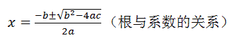
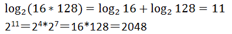
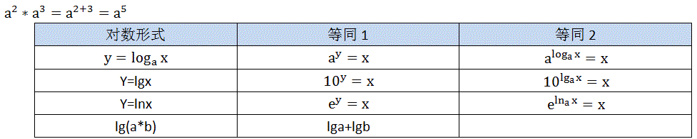
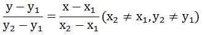

| 数学史 | 算术vs代数 | 最重要的数学方法 | 数论和概念 |
| 常用的直线方程 | 函数 | 数学的三次危机 | 趣味实例 |
平面几何，立体几何，解析几何（代数和几何的结合），球面几何，球面三角的内角和等于270度；
数学mathematica,分数fraction,方程equation,
量（具体）→数（抽象）→用字母代替数
箕田（主要是梯形田）的面积算法：“以盈补虚”，“穷竭法”，“割圆术”，“割补法”。
蝴蝶定理。
数的第一次抽象产生了算术，第二次抽象产生了代数；
古时，数学内的主要原理是为了研究天文，土地粮食作物的合理分配，税务和贸易等相关的计算．数学也就是为了了解数字间的关系，为了测量土地，以及为了预测天文事件而形成的．这些需要可以简单地被概括为数学对数量、结构、空间及时间方面的研究．
西欧从古希腊到16世纪经过文艺复兴时代，初等代数、以及三角学等初等数学已大体完备．但尚未出现极限的概念．
17世纪在欧洲变量概念的产生，使人们开始研究变化中的量与量的互相关系和图形间的互相变换．在经典力学的建立过程中，结合了几何精密思想的微积分的方法被发明．随着自然科学和技术的进一步发展，为研究数学基础而产生的集合论和数理逻辑等领域也开始慢慢发展．
数学的第一次统一：数学的两个分支，代数和几何的统一：笛卡尔Ｄescartes坐标。
哥德巴赫猜想：每一个大于２的偶数都是两个质数的和吗？
布尔George Boole用数学集合的概念取代了逻辑陈述，从而为逻辑创立了代数形式。“n是质数”的陈述对应包括所有符合陈述的n的集合－也就是说对应包括所有质数的集合。因此，逻辑陈述可以用集合的陈述代替。陈述之间的关系也转换成集合之间的关系。如果陈述Ｐ和陈述Ｑ分别对应集合p和集合q,那么逻辑陈述“Ｐ推出Ｑ”就相当于“集合p是集合q的子集”。布尔用０表示空集，１表示通用集。x集和y集的和用x+y表示。
牛顿认为，任何物体在不受外力的作用的情况下，将会在空间中沿着直线运行。行星之所以在封闭的轨道内运行，是因为太阳的吸引力使它们偏离了原来的运行的直线轨迹。
物体越重，所受的地球引力越大。但是为什么重力牵引重石块并不比吸引轻石块速度快？原因在于重石块的惯性大，需要更大的牵引力。
牛顿第一运动定律：惯性定律，物体在不受外力或外力为零的状态下将作匀速直线运动或者保持静止状态。
牛顿第二运行定律：当一个做匀速直线运动的物体受到外力作用时，速度会发生改变，并且速度的改变与所受外力的大小成正比。换句话说，物体会做加速运行。但是，物体的质量越大，加速就越困难，因为惯性越大。加速度=力/质量。
牛顿第三运动定律：当有外力作用于一个物体，此物体必定同时产生一个大小相同但方向相反的力，即反作用力。此定律被应用在火箭发射领域。
人类认识数的顺序
自然数（自然界存在的数）→分数（小数）→零→负数→无理数→虚数；（实数：实实在在存在的数）
一元二次方程ax2+bx+c=0(a≠0)的一般示解公式是9世纪阿拉伯数学家阿尔·花剌子模发现的。

欧氏几何建立在三角学基础上，是因为任何多边形都可以由三角形构造而成。
牛顿(1642-1727)
最大公约数和最小倍数：用于分数的约分化简，和分数加减的通分，即化异分母为同分母的问题；
在人类历史的长河中，首先认识的是具体的数量（简称量），如两只手，三头牛等，经过漫长的发展阶段，才离开了具体的量，第一次抽象出一般的数，如1,2,3,1/3,1/5等，因此，量是具体的，数是抽象的，所以人类从量到数的认识，第一次飞跃产生了算术。
算术的原义是数和数数的技术和学问，算术是研究数及数集上的去处的数学分支，主要内容有：
1 数的概念；
2 计算方法；
3 计算工具；
4 各种数的运算
5 数集和公理结构；
6 数的性质；
7 有关简单应用题的解答；
由于人们生活、生产和科学技术以及数学本身的需要，第一次抽象出来的数还不够，如需表示数量关系的一般规律，用数就难于表达，这就必然引起数学史上的第二次抽象，即用字母表示已知数或未知数，字母的引入就产生了代数。
代数是如何产生的呢？最先出现的是问题以及解决这些问题的办法，然后才是符号标记。我们如今将符号标记做为这个话题的本质。
算术是数的算术，而代数是类的算术。
初等代数，又叫古典代数，它是以字母代表数，并以数的运算规律为依据进行，数、字母，及字母间表达式的运算，初等代数主要研究常量，研究一元高次方程的解法问题。
高等代数研究变量，以行列式、矩阵为工具，研究一次多元议程所组成的议程组的解法问题，以及多项式。
代数algebra的发展：文字代数→简单代数→符号代数；
德国数学史家内塞尔曼在《希腊代数学》中，把实行代数发展的历程分为三个时期。
1 文字代数，即完全用文字而不有符号叙述。如我国的古算就是用语言文字叙述与解答问题的，使用起来很不方便；
2 简字代数（亦称半符号代数），用缩写文字。
3 符号代数，16世纪，符号代数最终由法国数学家韦达完成，再历经几百年，由法国数学家笛卡儿等完成了与现代写法一致的符号代数。
4 高等代数：行列式、矩阵、多项式；
初等代数与高等代数也有区别，前者主要研究字母运算规律及其代数方程；后者主要研究多项式和代数方程根的性质等。
方程是实行代数中的一个中心问题，含有未知数的等式叫方程。
在初等或高等数学中，函数是一个至关重要的概念。随着常量数学进入变量数学时期，函数的概念产生了。变量的函数是由这些变量与常量所组成的解析表达式。
几何是研究物体形状、大小及位置关系的一个数学分支。“几何”一词是希腊文中“土地”和“测量”二字合成的词，意即土地测量。因此几何学直接源于农业生产的需要。
解析几何：又叫坐标几何，它是通过建立坐标系，用代数的方法研究几何；图形性质的几何学，是17世纪法国的笛卡尔(Descartes,1596-1650)(图形→方程)和费马(方程→图形)建立的。
笛卡尔解析几何的中心思想
首先建立一种普遍的数学，使算术、代数、几何统一起来，指出平面上建立一种坐标系之后，几何点和实数对(x,y)之间建立一一对应关系，从而可以用实数对(x,y)来描写每个几何点。
笛卡尔把曲线看成动点的轨迹，从而动点坐标(x,y)就成了变量，且它们之间存在一定关系，这个关系就是以x、y为变量的代数方程的每一组解(x,y)都对应于一点。不同的解对应于不同的点，这些点的全体就构成了一条曲线，从而形成了笛卡尔关于几何问题与代数问题可以互相表达的，亦会称函数与曲线的互相对应思想。因此，研究几何问题，可以归结为相应的代数问题，笛卡尔把以住对立着的两个研究对象“数”和“形”起来了，并在数学中引入了变量的思想，从而开拓了变量数学领域，即代数与几何相互取长补短。
对数是天文学与三角不宁肯结合的产物，英国数学家纳皮尔（1550-1617）为了减轻人们繁重单调的计算，创造了对数这一术语。
1 前3世纪，古希腊数学家研究过两个数列：| 0, | 1， | 2, | 3, | 4, | 5, | 6， | 7, | … | (1) |
| 1, | 10, | 102, | 103, | 104, | 105, | 106, | 107, | … | (2) |
阿比较这两个数列，得到一个有趣的结论：（2）是数列首项为1,公比为10,其中两项的积也一定是（2）的项；数列（1）是数列（2）的指数。
2 德国数学家斯蒂菲尔（1487-15677），他在《整数的算术》里发现如下两个数列：
| -3 | -2 | -1 | 0, | 1， | 2, | 3, | 4, | 5, | 6， | 7, | 8 | 9 | 10 | 11 | 12 | … | (1) |
| 1/8 | 1/4 | 1/2 | 1, | 2, | 4, | 8, | 16, | 32, | 64, | 128, | 256 | 512, | 1024, | 2048, | 4096 | … | (2) |

为方便计算，利用对数可以将乘法化简为加法，除法为减法，这样就产生了对数表，选择什么样的”a”可以使对数表最简单，是a=10，还是a=1.00001?最后发现a=e=2.71828…所编制的自然对数表是最简单的。
微积分的出现（古典算术、几何、代数方法，甚至解析几何，对自然界的运动和变化都无能为力，变量和函数的引入，自然科学开始转向研究自然界的运动和变化，以穷竭法（无限逼近的极限方法）先分割后求和求曲边形的面积，先有了积分，然后有了微分；
| 名称 | 已知条件 | 方程（含有参数的等式） |
| 点斜式 | 直线上一点P0(x0,y0)和斜率k | y-y0=k(x-x0) |
| 斜截式 | 斜率k和纵截距b | Y=kx+b |
| 两点式 | 直线上的两点P1(x1,y1), P2(x2,y2) |  |
| 一般式 | ax+by+c=0(a,b不同时为0) |
| 变化的过程是离散的 | 数列 |
| 变化的过程是连续的 | 函数（气温） |
| 变量关系是相关的 | 回归关系 |
| 变量关系是确定的 | 函数关系 |
1 无理数的发现；
2 微积分的基础问题：微积分中的无穷小概念存在内在的矛盾。这也包括在处理增量时按需要令它等于0或不等于0.在这方面走出决定性一步的是柯西，他明确提出了极限的定义，且只也数、函数、变量有关，完全摆脱了几何、力学的直观。问题的最终解决在1872年左右，以有理数为基础来建立实数理论。”趋于一个极限的直觉概念”，需要有更为合乎逻辑的阐述。
3 数学的基础问题：最重要的是数学系统的相容性与完全性。相容性即无矛盾性，一个系统相容，就保证在系统内永远不会出现矛盾因而其内容是可靠的。完全性是系统内能表达的命题总是能够证明或者证伪的。
根据自由落体公式：下落高度h=1/2g*t*t(初速度为0，加速度为g=9.80665m/s^2，自由落体运动是初速度为零加,速度为g的匀加速直线运动，遵循匀变速直线运动规律；方向竖直向下）(此处设落下去的时间为t,则声音传上来的时间为6-t)。
声音又返了上来：h=340*（6-t）;
时间分两段，物体自由落体的时间和声音传递的时间，两段距离都是井的深度；
0.5*9.80665*t*t=340*(6-t)；
t=5.555；
h=0.455*340=151.3m;
伽利略是怎样推出s=gt;的呢？他的思路大致如下：他推断初速度为零、末速度为v的匀变速运动的平均速度是v/2 ，然后应用这个关系得出s= vt/2。再应用v=at ，就导出s=1/2gt^2。
用亩计算土地面积，始于周朝的井田制，秦汉到南北朝时规定长度单位1步=6尺，1里＝300步，1亩＝240平方步。隋唐以后，改为1步=5尺，1里=360步，1亩=100平方步；
1公顷=10000平方米=100公亩＝15市亩；
1丈=10尺=10/3m;
1亩(市亩)=60平方丈=666.667平方米=0.067公顷;
1亩(市亩)=25.82m*25.82m=14步左右成方;
中国长期以步为单位，秦汉到南北朝时规定长度单位1步=6尺，1尺＝19.91m,后大约每一千年增加3cm左右。为什么古代的尺由小变大呢，原来封建统治者向老百姓征税，是收布帛、米、粟等实物的。当时国家规定了一定的税率，不能随时变更，于是为了多征实物，各代都把尺稍微增大了一点。
我国没有三分货币，这是有科学道理的。因为银行在发行货币时，希望用尽量少的制单位组合成各种数字，以减少货币总数的流通量。
雾锁山头山锁雾，天连水尾水连天。数学mathematica,几何geometry,代数algebra,分数fraction,方程equation